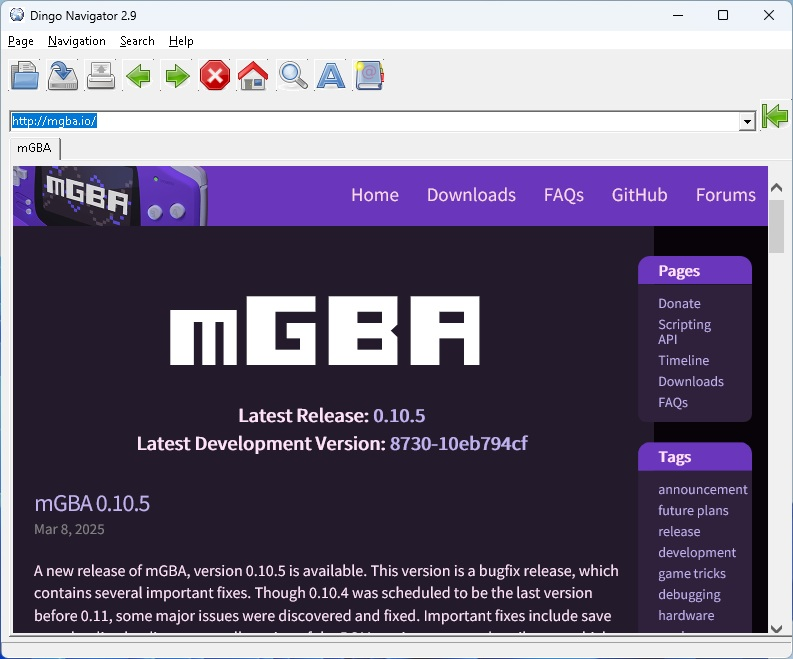

| Menu |
Item |
Description |
Shortcut |
| Page |
Open |
Load the page from a file |
Shift+O |
| Page |
Save |
Save the page to a file |
Shift+S |
| Page |
Print - Preview |
Show the page preview dialog |
Shift+V |
| Page |
Print - The page settings |
Show the page settings |
Shift+C |
| Page |
Print |
Print the page |
Shift+P |
| Navigation |
Back |
Go to the preversion page |
Alt+B |
| Navigation |
Forward |
Go to the next page |
Alt+N |
| Navigation |
Stop |
Stop loading the page |
Alt+S |
| Navigation |
Home |
Go to the default home page |
Alt+H |
| Navigation |
Refresh |
Reload the page |
Alt+R |
| Search |
To Internet |
Go to the default search service |
Shift+F |
| Search |
On the current page |
Find a text on the page |
Alt+F |
| Help |
Show |
Show the help |
F1 |